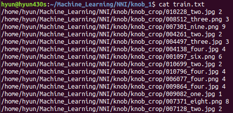
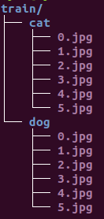

Data Loader¶
Pytorch涉及数据集的主要是Dataset和DataLoader类。Dataset 用于描述数据集本身, DataLoader规定了数据以何种方式送到网络中。
Dataset¶
Pytoch 自带数据集
自定义数据集
自定义数据集是 torch.utils.data.Dataset 的子类，必须重写 __getitem__ (用于索引) 和 __len__ (获取数据集大小)方法。
以下例子说明如何创建一个自定义数据集：
数据准备
图片存放在knob_crop目录下, train.txt和test.txt按7:3的比例存放对应图片的路径及label
自定义数据集类MyDataset
import torch
from torch.utils.data import Dataset
import torchvision.transforms as transforms
def default_loader(path):
return Image.open(path).convert('RGB')
class MyDataset(Dataset):
def __init__(self, txt, transform=None, target_transform=None, loader=default_loader):
super(MyDataset,self).__init__()
fh = open(txt, 'r')
imgs = []
for line in fh:
line = line.strip('\n')
line = line.rstrip('\n')
words = line.split()
imgs.append((words[0], int(words[1])))
self.imgs = imgs
self.transform = transform
self.target_transform = target_transform
self.loader = loader
def __getitem__(self, index):
fn, label = self.imgs[index]
img = self.loader(fn)
if self.transform is not None:
img = self.transform(img)
return img, label
def __len__(self):
return len(self.imgs)
transforms_train = transforms.Compose([
transforms.Resize((32,32)),
transforms.ToTensor()
])
transforms_test = transforms.Compose([
transforms.Resize((32,32)),
transforms.ToTensor()
])
trainset = MyDataset(txt='./train.txt', trandform=transforms_train)
testset = MyDataset(txt='./test.txt', transform=transforms_test)
ImageFolder
对于简单的分类数据集，pytorch提供了更简便的方式ImageFolder
ImageFolder要求数据集按如下方式存放数据：
import torch
from torch.utils.data import DataLoader
from torchvision import transforms, datasets
import matplotlib.pyplot as plt
import numpy as np
data_transform = transforms.Compose([
transforms.Resize(224,224),
transforms.ToTensor(),
])
train_dataset = datasets.ImageFolder(root='./train', transform=data_transform)
train_dataloader = DataLoader(dataset=train_dataset,
batch_size=4,
shuffle=True,
num_workers=4)
def show_batch_images(sample_batch):
labels_batch = sample_batch[1]
images_batch = sample_batch[0]
for i in range(4):
label_ = labels_batch[i].item()
image_ = np.transpose(images_batch[i], (1,2,0))
ax = plt.subplot(1,4,i+1)
ax.imshow(image_)
ax.set_title(str(label_))
ax.axis('off')
plt.pause(0.01)
plt.figure()
for i_batch, sample_batch in enumerate(train_dataloader):
show_batch_images(sample_batch)
plt.show()